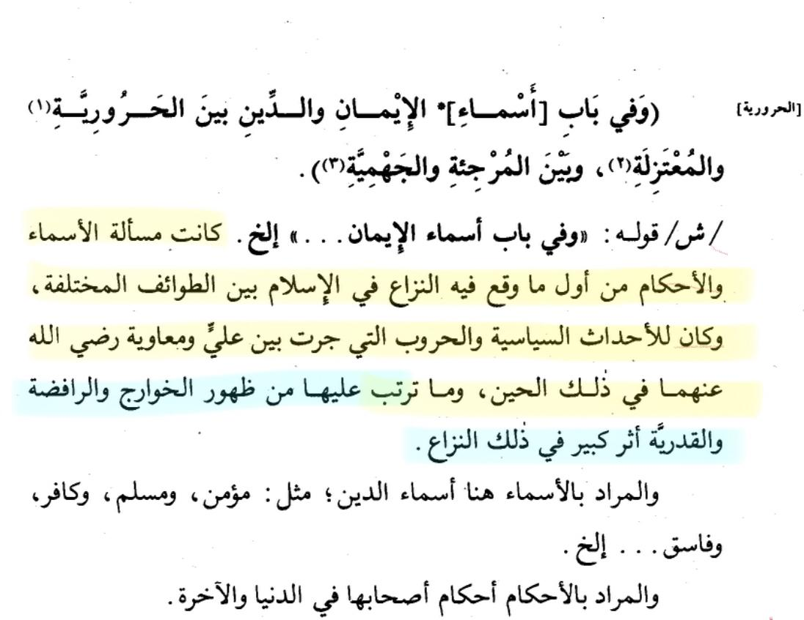
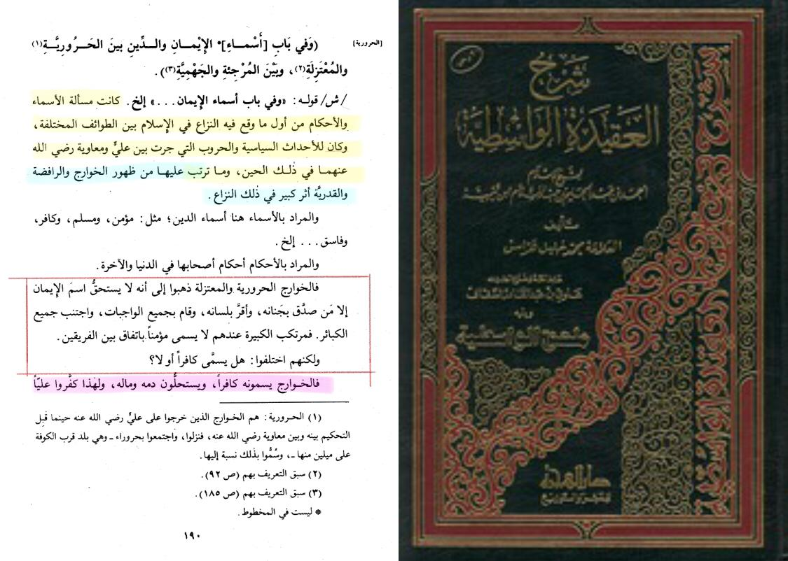
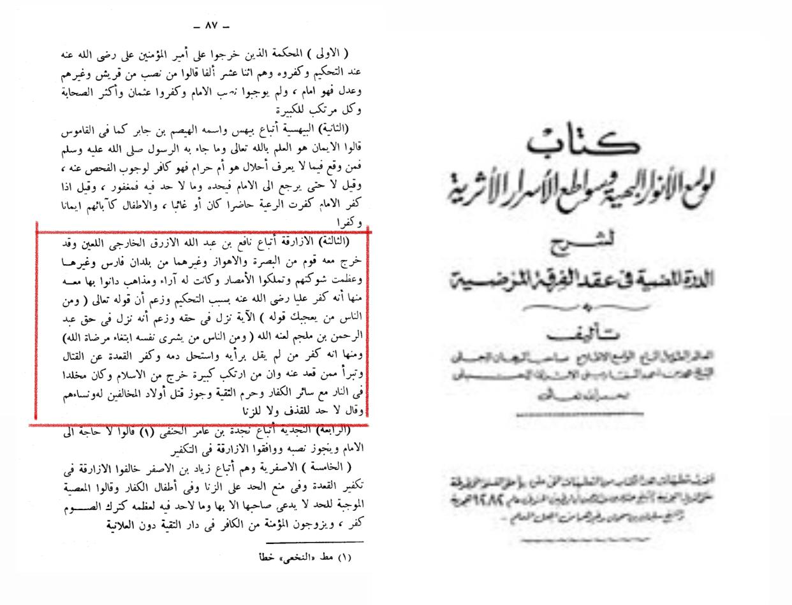

The Khawarij embraced various manners of deviance. And regarding them, their principles and their emergence, many Ulama have spoken, and one of the notable from amongst them, is Shaykh Khalil Al Harras. May Allah have mercy on him,
Regarding their transformation, he writes: 'The rulings were among the first things that caused disputes in Islam between the different sects, and they were due to the political events and wars that took place between Ali and Muawiyah, may God be pleased with them, at that time, and what resulted from them in the emergence of the Khawarij and the Rafidah.'

Thereafter, he describes the theology of the Khawarij and their flawed creed, where he writes:
'The Kharijites, the Haruris, and the Mu'tazila believed that only those who believed in their hearts, acknowledged it with their tongues, performed all duties, and avoided all major sins deserved the name of faith. According to them, the one who commits a major sin is not called a believer, according to the agreement of the two groups.
But they differed: Is he called an infidel or not?
The Khawarij call him an infidel, and consider his blood and money permissible, and for this reason they declared Ali an infidel.'

Imam Safarani Al Hanbali writes regarding them:
'Among them that he (Nafi' Bin Azraq) declared an infidel whoever did not share his opinion and considered his blood permissible and declared an infidel who sat out the fighting and disavowed whoever sat out from it and that whoever committed a major sin had left Islam and was bound for eternity in Hell with the rest of the infidels. He also permitted the killing of the children and women of those who opposed him and said that there is no punishment for slander or fornication.'
